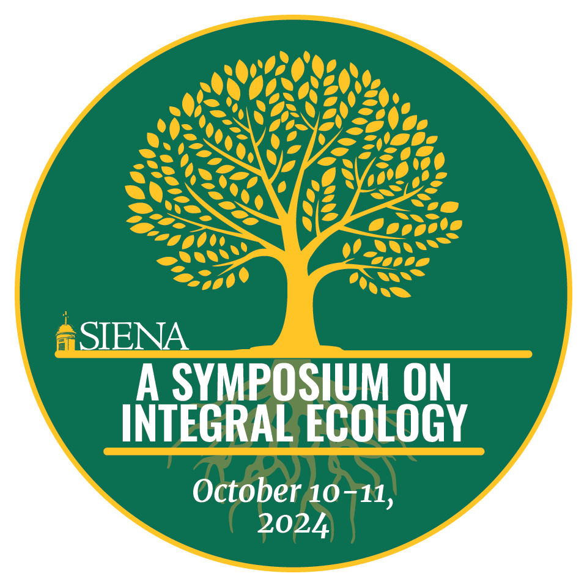

Fall 2024 Symposium on Integral Ecology
Over the summer I worked with Franciscian Friars at Siena's Laudato Si' Center for Integral Ecology. I designed 6 posters that were featured at the Fall 2024 Symposium on Integral Ecology, along with a sticker to promote the event.


Additionally, I designed a branded backdrop and banner to be displayed at future events, as well as stickers to promote the center.
Center Banner

Step & Repeat Banner
Center Sticker